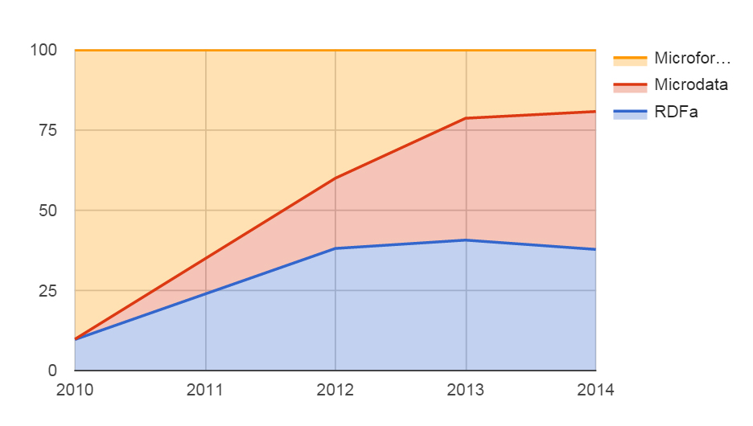

Роботы имеют право знать
(Заметки о Микроразметке)

Андрей Абрамов, Graph.uk
О чем поговорим
- Зачем нам микроразметка
- Словари
- Синтаксисы
- Примеры использования
- Инструменты
- Будущее
-
Семантическая верстка
http://html5doctor.com/ -
SEO
Основы сеонизма
Проблема
Картинка с фраем и интерфейсом
Картинка с бендером и кодом
Роботы не понимают веб содержимое
Для кого стараться?


Микроразметка
Терминология
Микроразметка — семантическая разметка
Микроформаты — инициатива microformats.org
Микроданные — стандарт HTML5 microdata
Микроразметка
- Словарь (описание объектов)
- Синтаксис (как расширить HTML)
Словари
- Dublin Core
- FOAF
- Data-vocabulary
- Good relations
- OpenGraph
- Schema.org
Синтаксисы
- Microformats.org
(Tantek Çelik)
2006 - RDFa (W3C)
(Mark Birbeck)
2008 - Microdata
(Ian Hickson)
2009 - JSON-LD (W3C)
(Manu Sporny)
2010 - RDFa Lite (W3C)
(Manu Sporny)
2012
Синтаксисы

Microformats
г. Солнечный,
просп. Романтиков, д. 21
Телефон: +7 (890) 123-45-67
Мы работаем ежедневно с 11:00 до 24:00
- Microformats
(Tantek Çelik)
2006 - RDFa
(Mark Birbeck)
2008 - Microdata
(Ian Hickson)
2009 - JSON-LD
(Manu Sporny)
2010 - RDFa Lite
(Manu Sporny)
2012
RDF/a
Albert Einstein
1879-03-14
the German Empire
- Microformats
(Tantek Çelik)
2006 - RDFa
(Mark Birbeck)
2008 - Microdata
(Ian Hickson)
2009 - JSON-LD
(Manu Sporny)
2010 - RDFa Lite
(Manu Sporny)
2012
Microdata
- Title
- The Reality Dysfunction
- Author
- Publication date
-
- Microformats
(Tantek Çelik)
2006 - RDFa
(Mark Birbeck)
2008 - Microdata
(Ian Hickson)
2009 - JSON-LD
(Manu Sporny)
2010 - RDFa Lite
(Manu Sporny)
2012
JSON-LD
{
"@context": "http://json-ld.org/contexts/person.jsonld",
"@id": "http://dbpedia.org/resource/John_Lennon",
"name": "John Lennon",
"born": "1940-10-09",
"spouse": "http://dbpedia.org/resource/Cynthia_Lennon"
}- Microformats
(Tantek Çelik)
2006 - RDFa
(Mark Birbeck)
2008 - Microdata
(Ian Hickson)
2009 - JSON-LD
(Manu Sporny)
2010 - RDFa Lite
(Manu Sporny)
2012
RDF/a Lite
87
out of 100
based on 24 user ratings
- Microformats
(Tantek Çelik)
2006 - RDFa
(Mark Birbeck)
2008 - Microdata
(Ian Hickson)
2009 - JSON-LD
(Manu Sporny)
2010 - RDFa Lite
(Manu Sporny)
2012
Аналитика
Web data commons
Так что использовать?
Без понятия
Что будет дальше?
- Микроформаты сходят на нет
- Google активно внедряет JSON-LD
- React 0.14 добавил поддержку RDFa
Применение
- Социальные сети
- Поисковые сниппеты
- Разметка в Email
- ...
Социальные сети
Мы делимся не ссылками - мы делимся контентом
OpenGraph
Купи слона
Готовьте контент правильно
Поисковые сниппеты
Lasagna
И не только сниппеты
Строка поиска
Хлебные крошки
Emails
- Gmail
- Inbox
Полномасштабный пример с событием
Будущее
- Google Now / Siri / Cortana
- Интернет вещей
- Evernote как хранилище объектов
- Больше действий к объектам